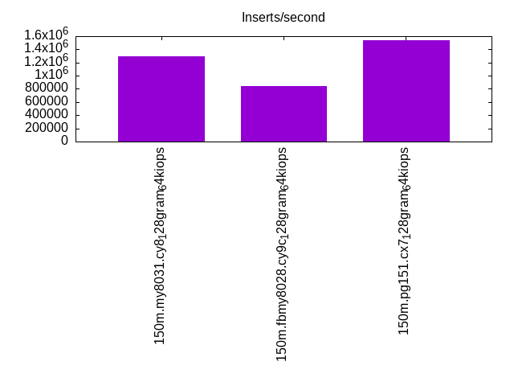
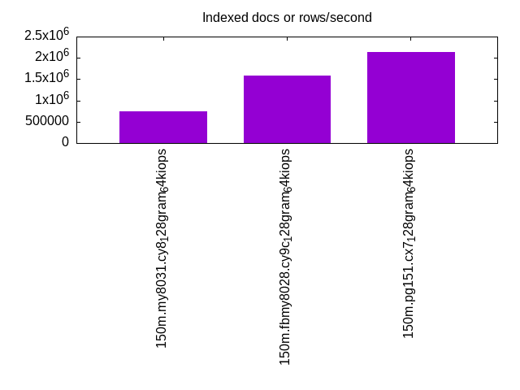
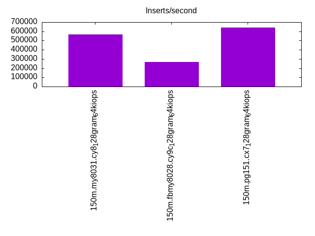
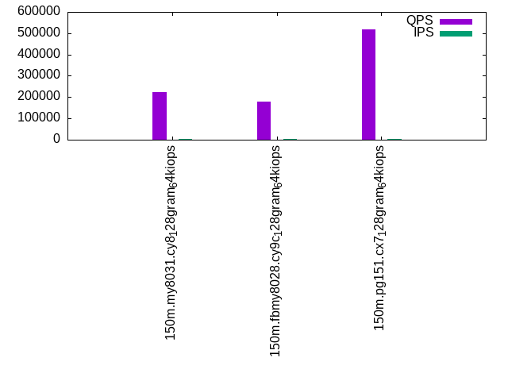
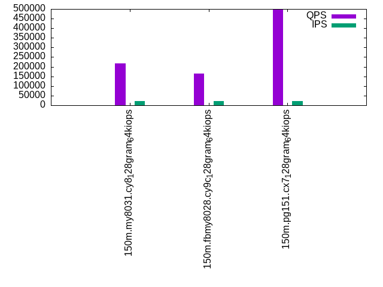
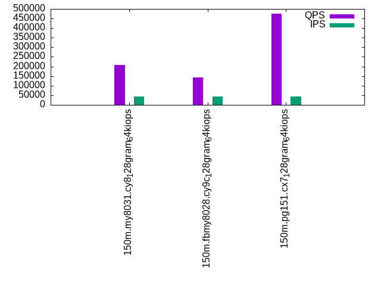

This is a report for the insert benchmark with 150M docs and 44 client(s). It is generated by scripts (bash, awk, sed) and Tufte might not be impressed. An overview of the insert benchmark is here and a short update is here. Below, by DBMS, I mean DBMS+version.config. An example is my8020.c10b40 where my means MySQL, 8020 is version 8.0.20 and c10b40 is the name for the configuration file.
The test server is an c6i.16xl with 32 cores, 64 HW threads (hyperthread disabled), 128G RAM and io2 storage (5T, 64K IOPs). The benchmark was run with 44 clients and there was 1 or 2 connections per client (1 for queries, 1 for inserts). The benchmark loads 150M rows without secondary indexes, creates secondary indexes, loads another 50M rows then does 3 read+write tests for one hour each that do queries as fast as possible with 100, 500 and then 1000 writes/second/client concurrent with the queries. The database is cached by the storage engine and the only IO is for writes. Clients and the DBMS share one server. The per-database configs are in the per-database subdirectories here.
The tested DBMS are:
The numbers are inserts/s for l.i0 and l.i1, indexed docs (or rows) /s for l.x and queries/s for q*.2. The values are the average rate over the entire test for inserts (IPS) and queries (QPS). The range of values for IPS and QPS is split into 3 parts: bottom 25%, middle 50%, top 25%. Values in the bottom 25% have a red background, values in the top 25% have a green background and values in the middle have no color. A gray background is used for values that can be ignored because the DBMS did not sustain the target insert rate. Red backgrounds are not used when the minimum value is within 80% of the max value.
| dbms | l.i0 | l.x | l.i1 | q100.1 | q500.1 | q1000.1 |
|---|---|---|---|---|---|---|
| 150m.my8031.cy8_128gram_64kiops | 1294538 | 739138 | 563750 | 223653 | 217569 | 208874 |
| 150m.fbmy8028.cy9c_128gram_64kiops | 838861 | 1590267 | 267494 | 177033 | 164464 | 142574 |
| 150m.pg151.cx7_128gram_64kiops | 1542024 | 2141992 | 639376 | 519215 | 496050 | 474375 |
This lists the average rate of inserts/s for the tests that do inserts concurrent with queries. For such tests the query rate is listed in the table above. The read+write tests are setup so that the insert rate should match the target rate every second. Cells that are not at least 95% of the target have a red background to indicate a failure to satisfy the target.
| dbms | q100.1 | q500.1 | q1000.1 |
|---|---|---|---|
| my8031.cy8_128gram_64kiops | 4342 | 21716 | 43433 |
| fbmy8028.cy9c_128gram_64kiops | 4343 | 21710 | 43433 |
| pg151.cx7_128gram_64kiops | 4342 | 21710 | 43314 |
| target | 4400 | 22000 | 44000 |
l.i0: load without secondary indexes. Graphs for performance per 1-second interval are here.
Average throughput:
Insert response time histogram: each cell has the percentage of responses that take <= the time in the header and max is the max response time in seconds. For the max column values in the top 25% of the range have a red background and in the bottom 25% of the range have a green background. The red background is not used when the min value is within 80% of the max value.
| dbms | 256us | 1ms | 4ms | 16ms | 64ms | 256ms | 1s | 4s | 16s | gt | max |
|---|---|---|---|---|---|---|---|---|---|---|---|
| my8031.cy8_128gram_64kiops | 54.310 | 45.354 | 0.252 | 0.045 | 0.038 | 0.108 | |||||
| fbmy8028.cy9c_128gram_64kiops | 8.753 | 68.159 | 22.951 | 0.133 | 0.004 | 0.078 | |||||
| pg151.cx7_128gram_64kiops | 96.077 | 3.855 | 0.039 | 0.030 | 0.043 |
Performance metrics for the DBMS listed above. Some are normalized by throughput, others are not. Legend for results is here.
ips qps rps rmbps wps wmbps rpq rkbpq wpi wkbpi csps cpups cspq cpupq dbgb1 dbgb2 rss maxop p50 p99 tag 1294538 0 0 0.0 1953.4 336.6 0.000 0.000 0.002 0.266 178314 59.2 0.138 15 7.2 135.8 14.6 0.108 133963 1898 150m.my8031.cy8_128gram_64kiops 838861 0 0 0.0 1325.3 300.2 0.000 0.000 0.002 0.366 426078 63.9 0.508 24 4.8 5.4 1.8 0.078 120995 57353 150m.fbmy8028.cy9c_128gram_64kiops 1542024 0 0 0.0 2689.0 623.6 0.000 0.000 0.002 0.414 168575 57.0 0.109 12 10.0 27.1 8.1 0.043 166428 73222 150m.pg151.cx7_128gram_64kiops
l.x: create secondary indexes.
Average throughput:
Performance metrics for the DBMS listed above. Some are normalized by throughput, others are not. Legend for results is here.
ips qps rps rmbps wps wmbps rpq rkbpq wpi wkbpi csps cpups cspq cpupq dbgb1 dbgb2 rss maxop p50 p99 tag 739138 0 4382 270.2 14222.4 642.3 0.006 0.374 0.019 0.890 141866 31.1 0.192 13 15.6 144.2 17.5 0.004 NA NA 150m.my8031.cy8_128gram_64kiops 1590267 0 9 0.3 1610.4 361.1 0.000 0.000 0.001 0.232 10969 51.1 0.007 10 7.2 7.8 8.4 0.003 NA NA 150m.fbmy8028.cy9c_128gram_64kiops 2141992 0 0 0.0 2472.6 596.8 0.000 0.000 0.001 0.285 24042 19.7 0.011 3 19.3 44.8 0.0 0.018 NA NA 150m.pg151.cx7_128gram_64kiops
l.i1: continue load after secondary indexes created. Graphs for performance per 1-second interval are here.
Average throughput:
Insert response time histogram: each cell has the percentage of responses that take <= the time in the header and max is the max response time in seconds. For the max column values in the top 25% of the range have a red background and in the bottom 25% of the range have a green background. The red background is not used when the min value is within 80% of the max value.
| dbms | 256us | 1ms | 4ms | 16ms | 64ms | 256ms | 1s | 4s | 16s | gt | max |
|---|---|---|---|---|---|---|---|---|---|---|---|
| my8031.cy8_128gram_64kiops | 0.261 | 96.906 | 2.446 | 0.222 | 0.165 | nonzero | 0.283 | ||||
| fbmy8028.cy9c_128gram_64kiops | 1.691 | 14.539 | 83.608 | 0.147 | 0.014 | 0.082 | |||||
| pg151.cx7_128gram_64kiops | 19.330 | 78.661 | 1.699 | 0.310 | 0.033 |
Performance metrics for the DBMS listed above. Some are normalized by throughput, others are not. Legend for results is here.
ips qps rps rmbps wps wmbps rpq rkbpq wpi wkbpi csps cpups cspq cpupq dbgb1 dbgb2 rss maxop p50 p99 tag 563750 0 5241 81.9 3439.5 439.5 0.009 0.149 0.006 0.798 183896 62.5 0.326 35 27.8 156.4 32.8 0.283 32673 300 150m.my8031.cy8_128gram_64kiops 267494 0 166 20.5 1551.9 358.3 0.001 0.078 0.006 1.372 147784 40.5 0.552 48 14.3 15.6 10.2 0.082 6343 1399 150m.fbmy8028.cy9c_128gram_64kiops 639376 0 0 0.0 3225.7 754.1 0.000 0.000 0.005 1.208 335425 59.6 0.525 30 33.6 82.3 25.3 0.033 50696 28470 150m.pg151.cx7_128gram_64kiops
q100.1: range queries with 100 insert/s per client. Graphs for performance per 1-second interval are here.
Average throughput:
Query response time histogram: each cell has the percentage of responses that take <= the time in the header and max is the max response time in seconds. For max values in the top 25% of the range have a red background and in the bottom 25% of the range have a green background. The red background is not used when the min value is within 80% of the max value.
| dbms | 256us | 1ms | 4ms | 16ms | 64ms | 256ms | 1s | 4s | 16s | gt | max |
|---|---|---|---|---|---|---|---|---|---|---|---|
| my8031.cy8_128gram_64kiops | 66.053 | 33.915 | 0.029 | 0.002 | nonzero | 0.029 | |||||
| fbmy8028.cy9c_128gram_64kiops | 65.258 | 34.683 | 0.050 | 0.008 | nonzero | 0.049 | |||||
| pg151.cx7_128gram_64kiops | 99.962 | 0.025 | 0.012 | 0.001 | nonzero | 0.050 |
Insert response time histogram: each cell has the percentage of responses that take <= the time in the header and max is the max response time in seconds. For max values in the top 25% of the range have a red background and in the bottom 25% of the range have a green background. The red background is not used when the min value is within 80% of the max value.
| dbms | 256us | 1ms | 4ms | 16ms | 64ms | 256ms | 1s | 4s | 16s | gt | max |
|---|---|---|---|---|---|---|---|---|---|---|---|
| my8031.cy8_128gram_64kiops | 98.666 | 1.330 | 0.003 | 0.022 | |||||||
| fbmy8028.cy9c_128gram_64kiops | 35.036 | 63.689 | 1.250 | 0.025 | 0.029 | ||||||
| pg151.cx7_128gram_64kiops | 0.013 | 98.837 | 0.841 | 0.309 | 0.062 |
Performance metrics for the DBMS listed above. Some are normalized by throughput, others are not. Legend for results is here.
ips qps rps rmbps wps wmbps rpq rkbpq wpi wkbpi csps cpups cspq cpupq dbgb1 dbgb2 rss maxop p50 p99 tag 4342 223653 0 0.0 416.9 12.9 0.000 0.000 0.096 3.047 433149 94.8 1.937 136 28.9 157.5 33.8 0.029 5370 3181 150m.my8031.cy8_128gram_64kiops 4343 177033 0 0.0 47.4 10.6 0.000 0.000 0.011 2.492 342514 94.6 1.935 171 12.2 13.6 40.1 0.049 3420 2477 150m.fbmy8028.cy9c_128gram_64kiops 4342 519215 0 0.0 1903.1 84.9 0.000 0.000 0.438 20.017 1000170 94.7 1.926 58 35.1 85.5 19.8 0.050 11571 7032 150m.pg151.cx7_128gram_64kiops
q500.1: range queries with 500 insert/s per client. Graphs for performance per 1-second interval are here.
Average throughput:
Query response time histogram: each cell has the percentage of responses that take <= the time in the header and max is the max response time in seconds. For max values in the top 25% of the range have a red background and in the bottom 25% of the range have a green background. The red background is not used when the min value is within 80% of the max value.
| dbms | 256us | 1ms | 4ms | 16ms | 64ms | 256ms | 1s | 4s | 16s | gt | max |
|---|---|---|---|---|---|---|---|---|---|---|---|
| my8031.cy8_128gram_64kiops | 65.050 | 34.836 | 0.088 | 0.025 | 0.001 | nonzero | 0.074 | ||||
| fbmy8028.cy9c_128gram_64kiops | 62.137 | 37.684 | 0.142 | 0.035 | 0.002 | 0.056 | |||||
| pg151.cx7_128gram_64kiops | 99.948 | 0.026 | 0.013 | 0.011 | 0.002 | nonzero | 0.111 |
Insert response time histogram: each cell has the percentage of responses that take <= the time in the header and max is the max response time in seconds. For max values in the top 25% of the range have a red background and in the bottom 25% of the range have a green background. The red background is not used when the min value is within 80% of the max value.
| dbms | 256us | 1ms | 4ms | 16ms | 64ms | 256ms | 1s | 4s | 16s | gt | max |
|---|---|---|---|---|---|---|---|---|---|---|---|
| my8031.cy8_128gram_64kiops | 67.083 | 32.175 | 0.742 | nonzero | 0.077 | ||||||
| fbmy8028.cy9c_128gram_64kiops | 20.182 | 58.894 | 20.085 | 0.839 | nonzero | 0.067 | |||||
| pg151.cx7_128gram_64kiops | 5.785 | 81.379 | 8.150 | 4.099 | 0.586 | 0.001 | 0.362 |
Performance metrics for the DBMS listed above. Some are normalized by throughput, others are not. Legend for results is here.
ips qps rps rmbps wps wmbps rpq rkbpq wpi wkbpi csps cpups cspq cpupq dbgb1 dbgb2 rss maxop p50 p99 tag 21716 217569 0 0.0 991.0 41.6 0.000 0.000 0.046 1.964 425693 94.7 1.957 139 51.4 180.0 53.9 0.074 5150 3149 150m.my8031.cy8_128gram_64kiops 21710 164464 0 0.0 200.5 46.6 0.000 0.000 0.009 2.200 322421 94.0 1.960 183 17.8 19.8 82.6 0.056 3022 2365 150m.fbmy8028.cy9c_128gram_64kiops 21710 496050 0 0.0 1411.5 146.8 0.000 0.000 0.065 6.923 957508 94.6 1.930 61 58.1 102.8 0.0 0.111 8318 6617 150m.pg151.cx7_128gram_64kiops
q1000.1: range queries with 1000 insert/s per client. Graphs for performance per 1-second interval are here.
Average throughput:
Query response time histogram: each cell has the percentage of responses that take <= the time in the header and max is the max response time in seconds. For max values in the top 25% of the range have a red background and in the bottom 25% of the range have a green background. The red background is not used when the min value is within 80% of the max value.
| dbms | 256us | 1ms | 4ms | 16ms | 64ms | 256ms | 1s | 4s | 16s | gt | max |
|---|---|---|---|---|---|---|---|---|---|---|---|
| my8031.cy8_128gram_64kiops | 62.994 | 36.770 | 0.197 | 0.039 | 0.001 | 0.044 | |||||
| fbmy8028.cy9c_128gram_64kiops | 57.775 | 41.714 | 0.444 | 0.065 | 0.002 | nonzero | 0.104 | ||||
| pg151.cx7_128gram_64kiops | 99.831 | 0.063 | 0.083 | 0.013 | 0.010 | nonzero | nonzero | 0.482 |
Insert response time histogram: each cell has the percentage of responses that take <= the time in the header and max is the max response time in seconds. For max values in the top 25% of the range have a red background and in the bottom 25% of the range have a green background. The red background is not used when the min value is within 80% of the max value.
| dbms | 256us | 1ms | 4ms | 16ms | 64ms | 256ms | 1s | 4s | 16s | gt | max |
|---|---|---|---|---|---|---|---|---|---|---|---|
| my8031.cy8_128gram_64kiops | 55.372 | 43.884 | 0.744 | nonzero | 0.086 | ||||||
| fbmy8028.cy9c_128gram_64kiops | 5.680 | 53.773 | 39.135 | 1.412 | 0.062 | ||||||
| pg151.cx7_128gram_64kiops | 0.200 | 81.639 | 13.401 | 3.599 | 1.140 | 0.020 | 0.731 |
Performance metrics for the DBMS listed above. Some are normalized by throughput, others are not. Legend for results is here.
ips qps rps rmbps wps wmbps rpq rkbpq wpi wkbpi csps cpups cspq cpupq dbgb1 dbgb2 rss maxop p50 p99 tag 43433 208874 0 0.0 1814.4 71.6 0.000 0.000 0.042 1.689 415516 94.7 1.989 145 76.5 205.1 77.0 0.044 4365 3117 150m.my8031.cy8_128gram_64kiops 43433 142574 1 0.1 403.1 91.0 0.000 0.000 0.009 2.145 286115 93.3 2.007 209 29.3 30.4 83.1 0.104 2717 2142 150m.fbmy8028.cy9c_128gram_64kiops 43314 474375 2 0.0 2155.9 258.3 0.000 0.000 0.050 6.106 924488 93.7 1.949 63 80.4 157.3 0.0 0.482 7736 5896 150m.pg151.cx7_128gram_64kiops
l.i0: load without secondary indexes
Performance metrics for all DBMS, not just the ones listed above. Some are normalized by throughput, others are not. Legend for results is here.
ips qps rps rmbps wps wmbps rpq rkbpq wpi wkbpi csps cpups cspq cpupq dbgb1 dbgb2 rss maxop p50 p99 tag 1294538 0 0 0.0 1953.4 336.6 0.000 0.000 0.002 0.266 178314 59.2 0.138 15 7.2 135.8 14.6 0.108 133963 1898 150m.my8031.cy8_128gram_64kiops 838861 0 0 0.0 1325.3 300.2 0.000 0.000 0.002 0.366 426078 63.9 0.508 24 4.8 5.4 1.8 0.078 120995 57353 150m.fbmy8028.cy9c_128gram_64kiops 1542024 0 0 0.0 2689.0 623.6 0.000 0.000 0.002 0.414 168575 57.0 0.109 12 10.0 27.1 8.1 0.043 166428 73222 150m.pg151.cx7_128gram_64kiops
l.x: create secondary indexes
Performance metrics for all DBMS, not just the ones listed above. Some are normalized by throughput, others are not. Legend for results is here.
ips qps rps rmbps wps wmbps rpq rkbpq wpi wkbpi csps cpups cspq cpupq dbgb1 dbgb2 rss maxop p50 p99 tag 739138 0 4382 270.2 14222.4 642.3 0.006 0.374 0.019 0.890 141866 31.1 0.192 13 15.6 144.2 17.5 0.004 NA NA 150m.my8031.cy8_128gram_64kiops 1590267 0 9 0.3 1610.4 361.1 0.000 0.000 0.001 0.232 10969 51.1 0.007 10 7.2 7.8 8.4 0.003 NA NA 150m.fbmy8028.cy9c_128gram_64kiops 2141992 0 0 0.0 2472.6 596.8 0.000 0.000 0.001 0.285 24042 19.7 0.011 3 19.3 44.8 0.0 0.018 NA NA 150m.pg151.cx7_128gram_64kiops
l.i1: continue load after secondary indexes created
Performance metrics for all DBMS, not just the ones listed above. Some are normalized by throughput, others are not. Legend for results is here.
ips qps rps rmbps wps wmbps rpq rkbpq wpi wkbpi csps cpups cspq cpupq dbgb1 dbgb2 rss maxop p50 p99 tag 563750 0 5241 81.9 3439.5 439.5 0.009 0.149 0.006 0.798 183896 62.5 0.326 35 27.8 156.4 32.8 0.283 32673 300 150m.my8031.cy8_128gram_64kiops 267494 0 166 20.5 1551.9 358.3 0.001 0.078 0.006 1.372 147784 40.5 0.552 48 14.3 15.6 10.2 0.082 6343 1399 150m.fbmy8028.cy9c_128gram_64kiops 639376 0 0 0.0 3225.7 754.1 0.000 0.000 0.005 1.208 335425 59.6 0.525 30 33.6 82.3 25.3 0.033 50696 28470 150m.pg151.cx7_128gram_64kiops
q100.1: range queries with 100 insert/s per client
Performance metrics for all DBMS, not just the ones listed above. Some are normalized by throughput, others are not. Legend for results is here.
ips qps rps rmbps wps wmbps rpq rkbpq wpi wkbpi csps cpups cspq cpupq dbgb1 dbgb2 rss maxop p50 p99 tag 4342 223653 0 0.0 416.9 12.9 0.000 0.000 0.096 3.047 433149 94.8 1.937 136 28.9 157.5 33.8 0.029 5370 3181 150m.my8031.cy8_128gram_64kiops 4343 177033 0 0.0 47.4 10.6 0.000 0.000 0.011 2.492 342514 94.6 1.935 171 12.2 13.6 40.1 0.049 3420 2477 150m.fbmy8028.cy9c_128gram_64kiops 4342 519215 0 0.0 1903.1 84.9 0.000 0.000 0.438 20.017 1000170 94.7 1.926 58 35.1 85.5 19.8 0.050 11571 7032 150m.pg151.cx7_128gram_64kiops
q500.1: range queries with 500 insert/s per client
Performance metrics for all DBMS, not just the ones listed above. Some are normalized by throughput, others are not. Legend for results is here.
ips qps rps rmbps wps wmbps rpq rkbpq wpi wkbpi csps cpups cspq cpupq dbgb1 dbgb2 rss maxop p50 p99 tag 21716 217569 0 0.0 991.0 41.6 0.000 0.000 0.046 1.964 425693 94.7 1.957 139 51.4 180.0 53.9 0.074 5150 3149 150m.my8031.cy8_128gram_64kiops 21710 164464 0 0.0 200.5 46.6 0.000 0.000 0.009 2.200 322421 94.0 1.960 183 17.8 19.8 82.6 0.056 3022 2365 150m.fbmy8028.cy9c_128gram_64kiops 21710 496050 0 0.0 1411.5 146.8 0.000 0.000 0.065 6.923 957508 94.6 1.930 61 58.1 102.8 0.0 0.111 8318 6617 150m.pg151.cx7_128gram_64kiops
q1000.1: range queries with 1000 insert/s per client
Performance metrics for all DBMS, not just the ones listed above. Some are normalized by throughput, others are not. Legend for results is here.
ips qps rps rmbps wps wmbps rpq rkbpq wpi wkbpi csps cpups cspq cpupq dbgb1 dbgb2 rss maxop p50 p99 tag 43433 208874 0 0.0 1814.4 71.6 0.000 0.000 0.042 1.689 415516 94.7 1.989 145 76.5 205.1 77.0 0.044 4365 3117 150m.my8031.cy8_128gram_64kiops 43433 142574 1 0.1 403.1 91.0 0.000 0.000 0.009 2.145 286115 93.3 2.007 209 29.3 30.4 83.1 0.104 2717 2142 150m.fbmy8028.cy9c_128gram_64kiops 43314 474375 2 0.0 2155.9 258.3 0.000 0.000 0.050 6.106 924488 93.7 1.949 63 80.4 157.3 0.0 0.482 7736 5896 150m.pg151.cx7_128gram_64kiops
Insert response time histogram
256us 1ms 4ms 16ms 64ms 256ms 1s 4s 16s gt max tag 0.000 54.310 45.354 0.252 0.045 0.038 0.000 0.000 0.000 0.000 0.108 my8031.cy8_128gram_64kiops 0.000 8.753 68.159 22.951 0.133 0.004 0.000 0.000 0.000 0.000 0.078 fbmy8028.cy9c_128gram_64kiops 0.000 96.077 3.855 0.039 0.030 0.000 0.000 0.000 0.000 0.000 0.043 pg151.cx7_128gram_64kiops
TODO - determine whether there is data for create index response time
Insert response time histogram
256us 1ms 4ms 16ms 64ms 256ms 1s 4s 16s gt max tag 0.000 0.261 96.906 2.446 0.222 0.165 nonzero 0.000 0.000 0.000 0.283 my8031.cy8_128gram_64kiops 0.000 1.691 14.539 83.608 0.147 0.014 0.000 0.000 0.000 0.000 0.082 fbmy8028.cy9c_128gram_64kiops 0.000 19.330 78.661 1.699 0.310 0.000 0.000 0.000 0.000 0.000 0.033 pg151.cx7_128gram_64kiops
Query response time histogram
256us 1ms 4ms 16ms 64ms 256ms 1s 4s 16s gt max tag 66.053 33.915 0.029 0.002 nonzero 0.000 0.000 0.000 0.000 0.000 0.029 my8031.cy8_128gram_64kiops 65.258 34.683 0.050 0.008 nonzero 0.000 0.000 0.000 0.000 0.000 0.049 fbmy8028.cy9c_128gram_64kiops 99.962 0.025 0.012 0.001 nonzero 0.000 0.000 0.000 0.000 0.000 0.050 pg151.cx7_128gram_64kiops
Insert response time histogram
256us 1ms 4ms 16ms 64ms 256ms 1s 4s 16s gt max tag 0.000 0.000 98.666 1.330 0.003 0.000 0.000 0.000 0.000 0.000 0.022 my8031.cy8_128gram_64kiops 0.000 35.036 63.689 1.250 0.025 0.000 0.000 0.000 0.000 0.000 0.029 fbmy8028.cy9c_128gram_64kiops 0.000 0.013 98.837 0.841 0.309 0.000 0.000 0.000 0.000 0.000 0.062 pg151.cx7_128gram_64kiops
Query response time histogram
256us 1ms 4ms 16ms 64ms 256ms 1s 4s 16s gt max tag 65.050 34.836 0.088 0.025 0.001 nonzero 0.000 0.000 0.000 0.000 0.074 my8031.cy8_128gram_64kiops 62.137 37.684 0.142 0.035 0.002 0.000 0.000 0.000 0.000 0.000 0.056 fbmy8028.cy9c_128gram_64kiops 99.948 0.026 0.013 0.011 0.002 nonzero 0.000 0.000 0.000 0.000 0.111 pg151.cx7_128gram_64kiops
Insert response time histogram
256us 1ms 4ms 16ms 64ms 256ms 1s 4s 16s gt max tag 0.000 0.000 67.083 32.175 0.742 nonzero 0.000 0.000 0.000 0.000 0.077 my8031.cy8_128gram_64kiops 0.000 20.182 58.894 20.085 0.839 nonzero 0.000 0.000 0.000 0.000 0.067 fbmy8028.cy9c_128gram_64kiops 0.000 5.785 81.379 8.150 4.099 0.586 0.001 0.000 0.000 0.000 0.362 pg151.cx7_128gram_64kiops
Query response time histogram
256us 1ms 4ms 16ms 64ms 256ms 1s 4s 16s gt max tag 62.994 36.770 0.197 0.039 0.001 0.000 0.000 0.000 0.000 0.000 0.044 my8031.cy8_128gram_64kiops 57.775 41.714 0.444 0.065 0.002 nonzero 0.000 0.000 0.000 0.000 0.104 fbmy8028.cy9c_128gram_64kiops 99.831 0.063 0.083 0.013 0.010 nonzero nonzero 0.000 0.000 0.000 0.482 pg151.cx7_128gram_64kiops
Insert response time histogram
256us 1ms 4ms 16ms 64ms 256ms 1s 4s 16s gt max tag 0.000 0.000 55.372 43.884 0.744 nonzero 0.000 0.000 0.000 0.000 0.086 my8031.cy8_128gram_64kiops 0.000 5.680 53.773 39.135 1.412 0.000 0.000 0.000 0.000 0.000 0.062 fbmy8028.cy9c_128gram_64kiops 0.000 0.200 81.639 13.401 3.599 1.140 0.020 0.000 0.000 0.000 0.731 pg151.cx7_128gram_64kiops